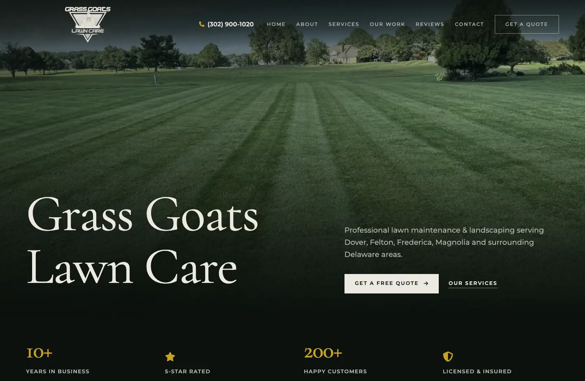
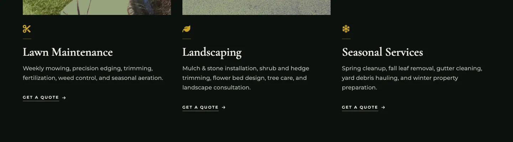
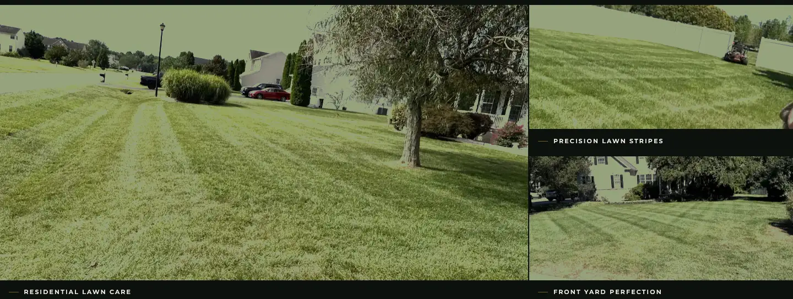
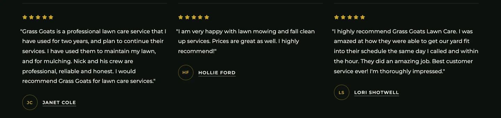
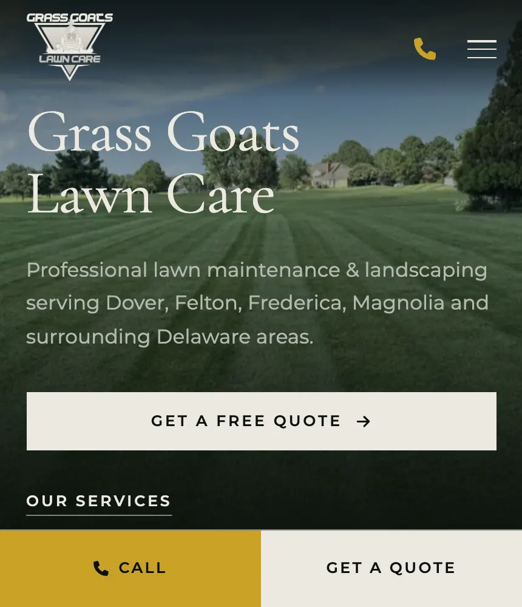
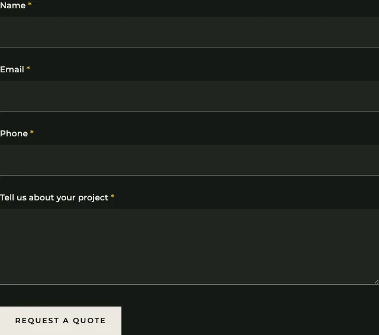
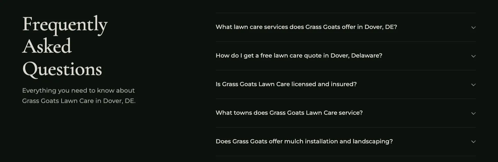

A lawn care company that had been mowing Kent County since 2014 needed a website that could show the work and take the quote. We built one that puts their own job photos front and center and turns a phone screen into a one-tap call.
The stripes speak for themselves. Now the website does too.


Lawn care companies are built on proof and speed. A homeowner in Dover looking for someone to take over their yard wants: a quick, easy way to see what they do and how much it costs. Most lawn care websites fail at both, because they lean on stock photos of lawns nobody in the neighborhood has ever seen, and their contact information is hard to find.
Grass Goat's website had a similar problem, which is why Tyler Patterson reached out to us. Grass Goats Lawn Care has operated for over a decade, in the northern Delaware area. He needed a website that was professional, and could covert new customers. Now, the site is helping them attract more business.
We built the site around their own photography. Every lawn on the page is a real Grass Goats job, so a homeowner recognizes the kind of yard they have. Then, we made the quote the easiest thing on the page to do.
Lawn maintenance, landscaping, and seasonal work, each with what is actually included and a quote button.

Their own before and after photos from yards around Kent County, captioned by the type of work.

Real reviews with real names, sitting right above the quote form where they do the most good.

A call button and a quote button pinned to the bottom of every mobile screen, so reaching them is always one tap away.

A short form that opens from any service, so a homeowner can send the details at 9pm and get a reply in the morning.

Structured data naming every town they serve, plus an FAQ written in the words people actually search with.

See the finished site at grassgoats.com.
See a free preview of your new site before you pay a cent. No credit card, no commitment.
Get Your Free Preview WebEaze
WebEaze